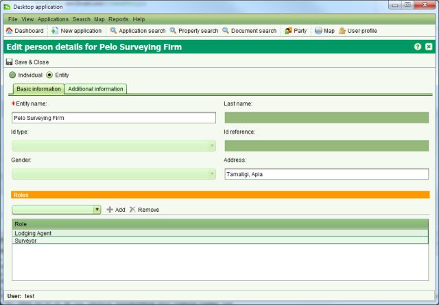

The Party Details screen allows you to create new parties as well as edit party details. This screen can be accessed by multiple functions in SOLA including the Party Search screen.

Party Details
You can enter details for an entity (i.e. organization, group or company) or an individual. The basic information required includes the name of the party with additional information such as contact information and alias details entered as required on the Additional Information tab. Once the necessary party details have been entered click Save & Close to create or update the party.